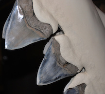

Megalodon teeth are the most common fossils we have for them. The teeth are triangular in shape, have a robust structure, large size, and fine serrations. The tooth was placed in the jaw at a steep angle, much like the great white shark. Megalodon teeth can measure over 180 millimeters or 7.1 inches, making them the largest of any known shark species. The megalodon's dentition was particularly robust. They could have over 250 teeth at one time and up to five rows. It's theorized that a large megalodon's jaw could span roughly 6.6 feet wide. In 2008, a team of scientists concluded that the megalodon's bite force was between 108,514 and 182,201 newtons. Compared to that of the largest confirmed great white shark (18,216 newtons), the megalodon's bite force proved to be as gigantic as it's size.